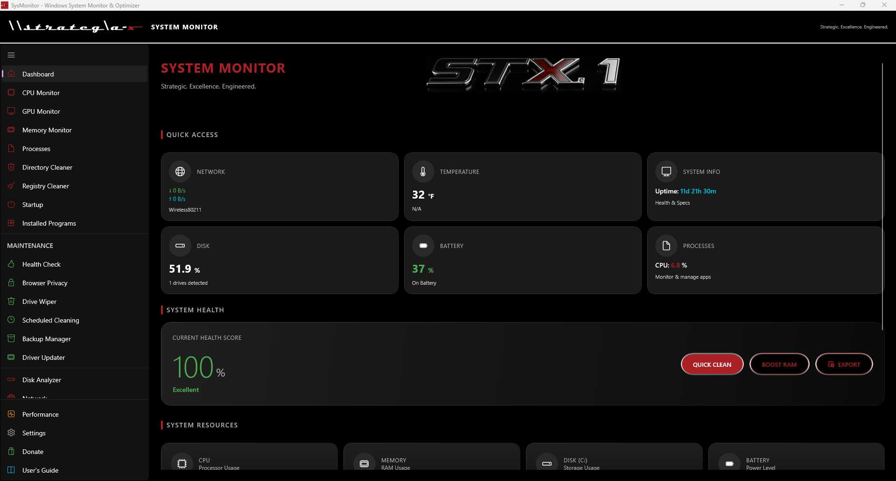

A system monitor that tells you the truth.
STX.1 reads your Windows hardware in real time and gives you a set of maintenance tools that report honestly about what they did. If a tool says it removed something, verified something or restored something, that is what happened.
Free and open source under the MIT License. No account, no telemetry, no upsell.

Download and verify
Two builds, same application. The installer registers the app with Windows and places the licence beside it. The portable ZIP runs from any folder.
These builds are not code signed. Windows SmartScreen will warn you that the publisher is unknown, and that warning is accurate. Verify the checksum below before you run either file.
SHA-256 checksums
- STX1-SystemMonitor-Setup-3.0.0.exe
- 0B314775D4D9E660963BBE603FCF8CC8A11178C49BE7C04CE74853DDEE3B9120
- STX1-SystemMonitor-3.0.0-Portable-x64.zip
- BE9DA4B45ACA55490F10DAB61667D8E1661A5A2ECC5D99D26DA5F751121FEE14
Check what you downloaded in PowerShell:
Get-FileHash .\STX1-SystemMonitor-Setup-3.0.0.exe -Algorithm SHA256Requirements
| Item | Requirement |
|---|---|
| Operating system | Windows 10 version 2004 (build 19041) or later, or Windows 11 |
| Processor | x64. The projects build for x86 and ARM64, but the released installer is x64 only |
| Memory | 4 GB minimum, 8 GB recommended |
| Disk space | 300 MB |
| Runtime | None. The build is self contained |
| Administrator rights | Needed for hardware sensors, machine-wide startup entries, and the Windows temp folder |
What is new in 3.0.0
A correctness release. Every change was a behaviour that did not match what the app told you it was doing.
An audit of the 2.x line found one shape of defect over and over: the operation completed, the interface said it succeeded, and the underlying thing had not happened. A few that were live in 2.2.2:
- The Drive Wiper never read a single pass back, so every wipe reported success whatever happened on disk.
- Registry backup wrote a file containing only comment lines, and there was no restore code at all.
- Every backup made with Encrypt Backup was unrestorable, because no decryption code existed.
- Scheduled cleaning opened the full window as administrator at the scheduled time and cleaned nothing.
- PDF Redact drew a black box and left the text underneath selectable and copyable.
None of those are visible from the interface. That is what makes them worse than crashes, and it is why this release exists.
Fixed, where the feature could do what its label said
Writes the patterns it names, and checks
Gutmann passes now follow the 1996 paper. Every wipe reads its last pass back and compares, and a file that cannot be confirmed is reported as unconfirmed rather than counted as wiped.
A backup that is really a backup
Every key a selected fix will touch is exported with reg.exe before anything is cleaned, and a failed export stops the clean.
Encrypted backups restore
PBKDF2 with 600,000 iterations, AES-256-CBC, and encrypt-then-MAC with an HMAC-SHA256 tag verified before any plaintext is written. The legacy format stays readable.
Turns things off the way Windows does
Entries use the same StartupApproved mechanism Task Manager writes, so the app, Task Manager and Windows agree, and every change is reversible.
Reads the adapter carrying your traffic
Selection follows the routed interface rather than whichever adapter claims the fastest link, so a machine running WSL, Hyper-V or Docker no longer shows zero throughput.
Moves apps aside instead of killing them
Background apps are lowered below your game in the processor queue and put back afterwards. Asking apps to close is a separate opt-in that only ever asks.
Removed, where it could not
Rewording a feature so the label matches a weaker reality leaves you with a control that looks useful and is not. Four were removed instead, which is what makes this a major version.
| Removed | What it actually was |
|---|---|
| RAM Cache | A folder on disk plus a TEMP variable set inside this one process that no other program could see. Its own code switched itself off on the next start |
| 7z compression | Wrote a ZIP and changed the extension, so asking for 7z gave you a ZIP named .7z |
| Auto-Optimize Memory | A setting nothing read. The related threshold is now described as what it drives, which is a memory alert |
| Frame rate card | A hard-coded 60 that nothing set, shown beside memory figures that are measured |
The full list, with the file each change lives in, is in the changelog.
What it does
Thirty-four pages, grouped the way the navigation menu groups them.
Monitoring
| Page | What it does |
|---|---|
| Dashboard | Health score out of 100, live cards, and three buttons: Quick Clean, Boost RAM and Export |
| CPU Monitor | Usage, core counts, clock speeds, per-core figures where the hardware reports them |
| GPU Monitor | Graphics adapter load, memory and temperature |
| Memory Monitor | RAM in use and available, with working-set trimming |
| Processes | Running processes with per-process processor and memory use |
| Disk Analyzer | Storage use per drive, and drive health where SMART is available |
| Network | Live throughput from the adapter that actually carries your traffic |
| Battery | Charge, power state, and health from design capacity against full-charge capacity. Says "Not reported" when Windows does not supply those figures |
| Temperature | Processor and graphics sensors and fan speeds, through LibreHardwareMonitor |
| System Info | Hardware and operating system inventory |
| Performance | Operation metrics and timing, with P95 and P99 figures and CSV export |
| History | Thirty days of stored readings, charted |
Maintenance
| Page | What it does |
|---|---|
| Directory Cleaner | Scans thirteen categories of reclaimable files and removes the ones you select |
| Registry Cleaner | Finds registry issues, with a real reg.exe export taken before any change |
| Startup | Enables and disables startup entries through the mechanism Task Manager uses, so changes are reversible and visible to Windows |
| Installed Programs | Inventory and uninstall, with the exit code reported in plain words |
| Health Check | System-wide checks producing a score, a grade and recommended actions |
| Game Mode | Lowers background apps below your game in the processor queue and restores them afterwards |
| Browser Privacy | Clears browsing traces, counted per browser actually found |
| Drive Wiper | Overwrites files with the pattern set you choose, reads the last pass back to confirm it, and warns when the target is a solid-state drive |
| Scheduled Cleaning | Daily, weekly or monthly cleans that run headlessly and report an exit code to Task Scheduler |
| Backup Manager | Full, incremental and differential backups, with optional AES-256 encryption that is authenticated and restorable |
| Driver Updater | Device driver inventory, with problem and unsigned drivers flagged |
Utilities and wireless
| Page | What it does |
|---|---|
| Large Files | Finds large files. Deletion goes to the Recycle Bin and does not follow links |
| Duplicate Finder | Duplicates decided by SHA-256 of the whole file, never by sampling. The oldest copy is kept and deletion goes to the Recycle Bin after a confirmation |
| File Tools | ZIP compression of a file or a folder, and GZip of a single file |
| PDF Tools | Merge, split, extract pages, convert images and text to PDF, and sign |
| Image Tools | Compress, convert, resize, and read image metadata |
| WiFi Analyzer | Nearby networks, channels, signal strength and security type |
| Bluetooth | Paired and discoverable device listing |
| Network Mapper | Devices on the local network with IP and MAC addresses |
What it deliberately does not do
Listed because earlier versions implied otherwise. Knowing the edges is part of trusting the middle.
No keyboard shortcuts
The app registers no application-wide accelerator. The only keys it handles are Delete, Escape and Enter inside the PDF editor.
No PDF text extraction or search
The PDF editor searches annotations, not page text, and its report export contains annotations rather than document text.
No 7z or tar archives
Compression is ZIP, for a file or a folder, and GZip, for a single file.
No RAM disk
The former RAM Cache was a folder on disk and a variable visible only to this process. It was removed rather than reworded.
No self-updating
The app does not check for or download new versions. To update, download the new release and run it.
No unrecoverability promise on an SSD
The drive decides where writes land, so overwriting a file cannot promise the flash that held it was written over. The page says so when it detects one.
No frame rate on most hardware
LibreHardwareMonitor exposes one frame-rate sensor and only some GPUs provide it. The overlay reads NO FPS SENSOR rather than showing a zero.
No data leaves your machine
Readings stay local. There is no account, no telemetry and no network call home.
Getting started
About ten minutes from download to a report you can send.
1. Install it
Run the installer and accept the MIT licence, which is the whole of the terms. There is no separate end-user agreement. When setup finishes, LICENSE.txt and THIRD-PARTY-NOTICES.txt sit beside the application in the install folder.
2. Read your health score
The app opens on the Dashboard and scores your system out of 100. Run it as administrator if temperature readings are missing, because hardware sensors need it. A card that reads "Not reported" is telling you the truth about your hardware, not failing.
| Score | Reads as |
|---|---|
| 90 and above | Excellent |
| 75 to 89 | Good |
| 60 to 74 | Fair |
| 40 to 59 | Poor |
| Below 40 | Critical |
3. Reclaim some space, then save a report
Quick Clean removes temporary files and browser cache and tells you how much it freed. Export writes a plain-text diagnostic summary into your Documents folder. Open it before you send it to anyone, so you know what is in it.
Everything the app stores lives in one folder.
%LocalAppData%\SysMonitor, with logs and crash reports inside it.
Deleting that folder resets the application completely.
Documentation
Four kinds of document, each for a reader in a different mode.
Getting started
Install to first result. Read a health score, free some space, save a report.
Securely wipe files
Destroy a file's contents, and learn what that does and does not guarantee.
Manage startup programs
Stop programs launching at sign-in, reversibly, in a way Task Manager agrees with.
What 3.0.0 removed, and why
Why features disappeared in a new version, and the trade-offs that came with it.
The Drive Wiper and SSDs
Why the app will not promise a wiped file is unrecoverable, and what to do instead.
Licence and privacy
MIT
Use, copy, modify, merge, publish, distribute, sublicense and sell copies of this software, for any purpose including commercial, provided the copyright notice and the permission notice go with it. This sentence is a summary. The LICENSE file is the licence, and it is what the installer presents and what installs beside the application.
Third-party components bundled into the self-contained build keep their own licences, notably LibreHardwareMonitor under MPL-2.0 and Serilog under Apache-2.0. Both are compatible with MIT and carry obligations of their own, all listed in THIRD-PARTY-NOTICES.md. Both downloads carry those notices with them.
Privacy
Readings stay on your machine. The app has no account system, sends no telemetry and does not phone home. Full text in the privacy policy.
Contributing
Issues and pull requests are welcome on GitHub. Contributions are accepted under the same MIT terms.